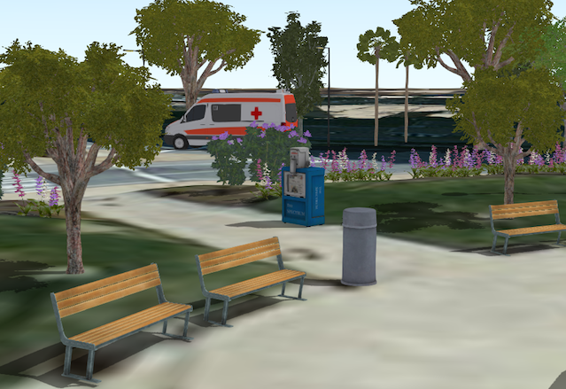

<!DOCTYPE html>
<html lang="en">
  <head>
    <meta charset="utf-8" />
    <meta name="viewport" content="width=device-width, initial-scale=1.0, maximum-scale=1.0, user-scalable=no" />

    <title>European Developer Summit 2019: ArcGIS API for JavaScript Presentations</title>
    <meta property="og:title" content="European Developer Summit 2019: ArcGIS API for JavaScript Presentations" />
    <meta property="og:type" content="website" />
    <meta property="og:image" content="https://esri.github.io/devsummit-eu-2019-3D-jsapi/featured-slide.jpg" />
    <meta property="og:url" content="https://esri.github.io/devsummit-eu-2019-3D-jsapi" />
    <meta name="description" content="European Developer Summit 2019: ArcGIS API for JavaScript Presentations">
    <meta property="og:description" content="European Developer Summit 2019: ArcGIS API for JavaScript Presentations">
    <link rel="stylesheet" href="./css/reveal.css" />
    <link rel="stylesheet" href="./css/theme/black.css" id="theme" />
    <!-- <link rel="stylesheet" href="./css/highlight/railscasts.css" /> -->
    <link rel="stylesheet" href="./css/print/paper.css" type="text/css" media="print" />
    <link rel="stylesheet" href="./assets/style.css" />

    <script src="https://cdnjs.cloudflare.com/ajax/libs/animejs/2.0.2/anime.min.js"></script>
  </head>
  <body>
    <div class="reveal">
      <div class="slides"><section  data-markdown><script type="text/template"><!-- .slide: data-background="images/bg-1.png" data-title="add-scene-layer" class="title" -->

# <span style="font-size: 0.8em;">ArcGIS API for JavaScript</span><br>Getting Started with 3D


<p>
Arno Fiva, Esri R&D Center Zürich<br>
@arnofiva<br><br>
Sébastien Szollosi, Esri France <br>
@SzollosiSbasti1 <br>
https://www.codethemap.fr/
</p>

ESRI EUROPEAN DEVELOPER SUMMIT​


</script></section><section  data-markdown><script type="text/template">
<!-- .slide: data-background="images/bg-2.png" -->

## Preface

- This session is about writing JavaScript & HTML!
- Esri provides configurable applications
  - [SceneViewer](https://www.esri.com/en-us/arcgis/products/3d-scene-viewer)
  - [Story Maps](https://storymaps.arcgis.com/en/)
  - [Web AppBuilder](https://www.esri.com/en-us/arcgis/products/web-appbuilder/overview)
</script></section><section  data-markdown><script type="text/template">
<!-- .slide: data-background="images/bg-2.png" -->

## Preface

Browser requirements
- Any _modern_ browser will work (IE 11+)
- Mobile: _latest_ Samsung & Apple devices
- Desktop: dedicated graphics card recommended
</script></section><section  data-markdown><script type="text/template">
<!-- .slide: data-background="images/bg-4.png" -->

## JavaScript API Samples

https://ralucanicola.github.io/JSAPI_demos

<iframe data-src="https://ralucanicola.github.io/JSAPI_demos/world-population/" style="width: 70%;">
</script></section><section  data-markdown><script type="text/template">
<!-- .slide: data-background="images/bg-4.png" -->

## JavaScript API Samples

https://github.com/RalucaNicola/the-globe-of-extremes

<iframe data-src="https://ralucanicola.github.io/the-globe-of-extremes/" style="width: 70%;">

</script></section><section  data-markdown><script type="text/template">
<!-- .slide: data-background="images/bg-4.png" -->

## JavaScript API Samples

https://ralucanicola.github.io/JSAPI_demos

<iframe data-src="https://ralucanicola.github.io/JSAPI_demos/sketch-the-city/" style="width: 70%;">


</script></section><section  data-markdown><script type="text/template">
<!-- .slide: data-background="images/bg-2.png" -->

## Agenda

1. Getting Started
2. Adding Data
3. Visualizing Data
4. Interacting with Data
5. Web Scenes
</script></section><section  data-markdown><script type="text/template">
<!-- .slide: data-background="images/bg-4.png" -->

## Getting Started
</script></section><section  data-markdown><script type="text/template">
<!-- .slide: data-background="images/bg-3.png" -->

### The simplest possible app

<span style="font-size: 50%">https://developers.arcgis.com/javascript/latest/sample-code/sandbox/index.html?sample=intro-sceneview</span>

<div style="max-width: 900px; float: none; position: absolute; left: 50%; transform: translate(-50%, 0); font-size: 31px;">

```html
<!DOCTYPE html>
<html>
<head>
  <meta charset="utf-8">
  <title>Create a 3D map</title>

  <link rel="stylesheet" href="//js.arcgis.com/4.13/esri/css/main.css">
  <script src="//js.arcgis.com/4.13/">__SCRIPT_END__

</head>
<body>
  <script>
      require([
        "esri/Map",
        "esri/views/SceneView",
        "dojo/domReady!"
      ], function(Map, SceneView) {

        var map = new Map({
          basemap: "satellite"
        });

        var view = new SceneView({
          container: "viewDiv",
          map: map
        });
      });
  __SCRIPT_END__
  <div id="viewDiv"></div>
</body>
</html>
```
</script></section><section  data-markdown><script type="text/template">
### The simplest possible app

<iframe data-src="./samples/getting-started-with-3d/simplest-possible-app.html" style="width: 75%;"></iframe>

</script></section><section  data-markdown><script type="text/template">
### The simplest possible app

- Out of the box you get:
  - 3D rendering of the world
  - User interaction with the 3D view (navigation)
  - A set of basemaps to work with
  - 3D terrain
</script></section><section  data-markdown><script type="text/template">
<!-- .slide: data-background="images/bg-3.png" -->

### Architecture

<br/>

</script></section><section  data-markdown><script type="text/template">
<!-- .slide: data-background="images/bg-3.png" -->

### Architecture


</script></section><section  data-markdown><script type="text/template">
<!-- .slide: data-background="images/bg-4.png" -->

## Resources
</script></section><section  data-markdown><script type="text/template">
<!-- .slide: data-background="images/bg-3.png" -->
### <b>ArcGIS API for JavaScript</b>

<span style="font-size: 50%">https://developers.arcgis.com/javascript/</span>


</script></section><section  data-markdown><script type="text/template">
<!-- .slide: data-background="images/bg-3.png" -->
### <b>ArcGIS API for JavaScript Sandbox</b>

<span style="font-size: 50%">https://developers.arcgis.com/javascript/latest/sample-code/</span>


</script></section><section  data-markdown><script type="text/template">
<!-- .slide: data-background="images/bg-3.png" -->
### <b>GitHub</b>

<span style="font-size: 50%">https://github.com/esri</span>


</script></section><section  data-markdown><script type="text/template">
<!-- .slide: data-background="images/bg-4.png" -->

## Adding Data
</script></section><section  data-markdown><script type="text/template">
<!-- .slide: data-background="images/bg-3.png" data-title="add-tile-layer" -->

### Add TileLayer

<div class="two-columns">
  <div class="left-column">

<div class="code-snippet">
<button class="play" id="addTileLayerButton"></button>
<pre><code class="lang-ts">// Add layer showing housing density in NYC
var housingDensityLayer = new TileLayer({
  url: "//tiles.arcgis.com/.../NY_Housing..."
});
map.layers.add(housingDensityLayer);
</code></pre>
</div>

<div class="code-snippet">
<button class="play" id="addPortalTileLayerButton"></button>
<pre><code class="lang-ts">// Add layer using as portal item
var housingDensityLayer = new TileLayer({
  portalItem: {
    id: "2d6f6624424a410a994bd9432befb907"
  }
});
map.layers.add(housingDensityLayer);
</code></pre>
</div>

  </div>
  <div class="right-column">
    <iframe id="go-to-demo" data-src="./samples/getting-started-with-3d/newyork-getting-started.html" ></iframe>
  </div>
</div>
</script></section><section  data-markdown><script type="text/template">
<!-- .slide: data-background="images/bg-3.png" data-title="add-feature-layer" -->

### URL vs Portal Item ID


<span style="font-size: 50%"><a href="http://www.arcgis.com/home/item.html?id=2d6f6624424a410a994bd9432befb907">http://www.arcgis.com/home/item.html?id=<span style="color: orange; font-weight: bold;">2d6f6624424a410a994bd9432befb907</span></a></span>


</script></section><section  data-markdown><script type="text/template">
<!-- .slide: data-background="images/bg-3.png" data-title="add-feature-layer" -->

### Add FeatureLayer

<div class="two-columns">
  <div class="left-column">

<div class="code-snippet">
<button class="play" id="addFeatureLayerButton"></button>
<pre><code class="lang-ts">// Add points containing information of
// popular buildings in Manhattan
var buildingInfo = new FeatureLayer({
  portalItem: {
    id: "28cfd79f7c974597aa687417bf5169ca"
  }
  popupEnabled: true,
  outFields: ["NAME", "CNSTRCT_YR", "HEIGHT"],
});
map.layers.add(buildingInfo);
</code></pre>
</div>

  </div>
  <div class="right-column">
    <iframe id="go-to-demo" data-src="./samples/getting-started-with-3d/newyork-getting-started.html" ></iframe>
  </div>
</div>
</script></section><section  data-markdown><script type="text/template">
<!-- .slide: data-background="images/bg-3.png" data-title="add-scene-layer" -->

### Add SceneLayer

<div class="two-columns">
  <div class="left-column">

<div class="code-snippet">
<button class="play" id="addSceneLayerButton"></button>
<pre><code class="lang-ts">// Add layer showing housing density in NYC
var buildingsLayer = new SceneLayer({
  portalItem: {
    id: "2e0761b9a4274b8db52c4bf34356911e"
  }
});
map.layers.add(buildingsLayer);
</code></pre>
</div>

  </div>
  <div class="right-column">
    <iframe id="go-to-demo" data-src="./samples/getting-started-with-3d/newyork-getting-started.html" ></iframe>
  </div>
</div>
</script></section><section  data-markdown><script type="text/template">
### Layer types
- Most "2D" layers are supported in 3D
  - `TileLayer`, `VectorTileLayer`, `ImageryLayer`, `WMSLayer`, ...
  - `GraphicsLayer`, `FeatureLayer`, `GeoJSONLayer`, ...
- Some are not (yet)
  - `KMLLayer`, `MapNotesLayer`, `GeoRSSLayer`
- Comprehensive support list in the [Layer](https://developers.arcgis.com/javascript/latest/api-reference/esri-layers-Layer.html) API reference
</script></section><section  data-markdown><script type="text/template">
### Scene layers


<ul>
  <li>
    <span style="color:#D9BA6F">Scene layers</span> are specialized 3D layers
    <ul>
      <li>Optimized for 3D drawing performance</li>
      <li>Open data format: <a href="https://github.com/Esri/i3s-spec">i3s</a></li>
      <li>Not supported in 2D at the moment</li>
    </ul>
  </li>
  <li class="fragment">
    Multiple types
    <ul>
      <li>SceneLayer: <a href="https://www.arcgis.com/home/webscene/viewer.html?webscene=19dcff93eeb64f208d09d328656dd492">3D objects</a></li>
      <li class="fragment"><a href="http://www.arcgis.com/home/webscene/viewer.html?webscene=543648a92446497db8a92c06ce1ad0b1">BuildingSceneLayer</a></li>
      <li class="fragment"><a href="https://www.arcgis.com/home/webscene/viewer.html?layers=a455861789b04d699440bff80e1cef59">PointCloudLayer</a></li>
      <li class="fragment"><a href="https://www.arcgis.com/home/webscene/viewer.html?layers=2883b9baf2f24eabbd3297ea4ee01f14">IntegratedMeshLayer</a></li>
    </ul>
  </li>
</ul>
</script></section><section  data-markdown><script type="text/template">
### Projections

[SceneView.viewingMode](https://developers.arcgis.com/javascript/latest/api-reference/esri-views-SceneView.html#viewingMode)

<table>
  <tr>
    <td style="vertical-align: middle">
      Global scene:<br/>
      <ul>
        <li>WebMercator</li>
        <li>WGS84</li>
      </ul>
    </td>
    <td>
      
    </td>
  </tr>
  <tr>
    <td style="vertical-align: middle">
      Local scene:<br/>
      <ul>
        <li>Any projected CS</li>
        <li>One PCS only!</li>
      </ul>
    </td>
    <td>
      
    </td>
  </tr>
</table>
</script></section><section  data-markdown><script type="text/template">
<!-- .slide: data-background="images/bg-4.png" -->
## Visualizing Data
</script></section><section  data-markdown><script type="text/template">
<!-- .slide: data-background="images/bg-3.png" data-title="feature-layer-renderer" -->

### Visualization: FeatureLayer

<div class="two-columns">
  <div class="left-column">

<div class="code-snippet">
<button class="play" id="changeFeatureLayerRendererButton"></button>
<pre><code class="lang-ts">// Visualize points with 3D icons
buildingInfoLayer.renderer = {
  type: "simple",
  symbol: new PointSymbol3D({
    symbolLayers: [new IconSymbol3DLayer({
      size: 18,
      resource: {
        href: "../images/info.png"
      }
    })],
    verticalOffset: {
      screenLength: 100,
      maxWorldLength: 100
    },
    callout: new LineCallout3D()
}};</code></pre>
</div>

<div class="code-snippet">
<button class="play" id="improvePerspectiveButton"></button>
<pre><code class="lang-ts">// Improve perspective
buildingInfoLayer
  .screenSizePerspectiveEnabled = false;
</code></pre>
</div>

  </div>
  <div class="right-column">
    <iframe id="go-to-demo" data-src="./samples/getting-started-with-3d/newyork-getting-started.html" ></iframe>
  </div>
</div>
</script></section><section  data-markdown><script type="text/template">
<!-- .slide: data-background="images/bg-3.png" data-title="scene-layer-renderer" -->

### Visualization: SceneLayer

<div class="two-columns">
  <div class="left-column">

<div class="code-snippet">
<button class="play" id="changeBuildingRendererButton"></button>
<pre><code class="lang-ts">// Visualize buildings
buildingLayer.renderer = new SimpleRenderer({
  symbol: new MeshSymbol3D({
    symbolLayers: [new FillSymbol3DLayer({
      material: {
        color: [153, 204, 203]
      }
    })]
  })
});
</code></pre>
</div>

<div class="code-snippet">
<button class="play" id="addEdgesButton"></button>
<pre><code class="lang-ts">// Add solid edges
      material: { ... },
      edges: new SolidEdges3D({
        color: [50, 50, 50, 0.5]
      })
</code></pre>
</div>

<div class="code-snippet">
<button class="play" id="addShadowsButton"></button>
<pre><code class="lang-ts">view.environment.lighting
  .directShadowsEnabled = true;
</code></pre>
</div>

  </div>
  <div class="right-column">
    <iframe id="go-to-demo" data-src="./samples/getting-started-with-3d/newyork-getting-started.html" ></iframe>
  </div>
</div>
</script></section><section  data-markdown><script type="text/template">
<!-- .slide: data-background="images/bg-3.png" data-title="elevation-info" -->

### Visualization: Elevation Mode

<div class="two-columns">
  <div class="left-column">

<div class="code-snippet">
<button class="play" id="showBuildingsButton"></button>
<pre><code class="lang-ts">// Add buildings scene layer
buildingLayer.visible = true;
</code></pre>
</div>

<div class="code-snippet">
<button class="play" id="changeElevationModeButton"></button>
<pre><code class="lang-ts">// Draw point symbols on top of buildings
buildingInfoLayer.elevationInfo = {
  mode: "relative-to-scene"
};
</code></pre>
</div>

  </div>
  <div class="right-column">
    <iframe id="go-to-demo" data-src="./samples/getting-started-with-3d/newyork-getting-started.html" ></iframe>
  </div>
</div>
</script></section><section  data-markdown><script type="text/template">
<!-- .slide: data-background="images/bg-3.png" data-title="feature-layer-renderer" -->

### Renderers and Symbols

- Use the same renderers in 2D and 3D
  - [`SimpleRenderer`](https://developers.arcgis.com/javascript/latest/api-reference/esri-renderers-SimpleRenderer.html), [`ClassBreaksRenderer`](https://developers.arcgis.com/javascript/latest/api-reference/esri-renderers-ClassBreaksRenderer.html), [`UniqueValueRenderer`](https://developers.arcgis.com/javascript/latest/api-reference/esri-renderers-UniqueValueRenderer.html)
- 2D symbols are supported, _lossy conversion_
- For 3D visualizations, use 3D symbols
  -  [`PointSymbol3D`](https://developers.arcgis.com/javascript/latest/api-reference/esri-symbols-PointSymbol3D.html), [`LineSymbol3D`](https://developers.arcgis.com/javascript/latest/api-reference/esri-symbols-LineSymbol3D.html), [`PolygonSymbol3D`](https://developers.arcgis.com/javascript/latest/api-reference/esri-symbols-PolygonSymbol3D.html), [`MeshSymbol3D`](https://developers.arcgis.com/javascript/latest/api-reference/esri-symbols-MeshSymbol3D.html)
</script></section><section  data-markdown><script type="text/template">
### 3D Symbols

<!-- (flat) IconSymbol3DLayer - LineSymbol3DLayer - FillSymbol3DLayer -->

<table class="symbology">
  <tr>
    <th>PointSymbol3D</th>
    <th>LineSymbol3D</th>
    <th>PolygonSymbol3D</th>
  </tr>
  <tr>
    <td>
      <div class="image-title">IconSymbol3DLayer</div>
      
    </td>
    <td>
      <div class="image-title">LineSymbol3DLayer</div>
      
    </td>
    <td>
      <div class="image-title dark">FillSymbol3DLayer</div>
      
    </td>
  </tr>
  <tr>
    <!-- (volumetric) ObjectSymbol3DLayer - PathSymbol3DLayer - ExtrudeSymbol3DLayer -->
    <td>
      <div class="image-title">ObjectSymbol3DLayer</div>
      
    </td>
    <td>
      <div class="image-title">PathSymbol3DLayer</div>
      
    </td>
    <td>
      <div class="image-title">ExtrudeSymbol3DLayer</div>
      
    </td>
  </tr>
</table>
</script></section><section  data-markdown><script type="text/template">
### 3D Symbols

<div style="height: 300px; padding: 100px;">

<table class="symbology">
  <tr>
    <td>
      
    </td>
    <td>
      
    </td>
    <td>
      
    </td>
  </tr>
  <tr>
    <td style="text-align: center;"><a href="https://developers.arcgis.com/javascript/latest/guide/esri-web-style-symbols-3d/">WebStyleSymbol</a></td>
    <td style="text-align: center;">Import glTF</td>
    <td style="text-align: center;">New 3D Line Symbols</td>
  </tr>
</table>

</div>
</script></section><section  data-markdown><script type="text/template">
<!-- .slide: data-background="images/bg-3.png" -->

### 3D Symbols

Animated [WaterSymbol3DLayer](https://developers.arcgis.com/javascript/latest/api-reference/esri-symbols-WaterSymbol3DLayer.html)

<div class="two-columns">
  <div class="left-column">

<div class="code-snippet">
<pre><code class="lang-ts">var waterSymbol = {
  type: "polygon-3d",
  symbolLayers: [{
    type: "water",
    waveDirection: 180,
    color: "#5975a3",
    waveStrength: "moderate",
    waterbodySize: "medium"
  }]
};
</code></pre>
</div>

  </div>
  <div class="right-column">
    <iframe data-src="./samples/getting-started-with-3d/water.html" ></iframe>
  </div>
</div>
</script></section><section  data-markdown><script type="text/template">

<!-- .slide: data-background="images/bg-4.png" -->

## Interacting with Data
</script></section><section  data-markdown><script type="text/template">
<!-- .slide: data-background="images/bg-2.png" -->

### Working with the SceneView

<span style="font-size: 50%">https://developers.arcgis.com/javascript/latest/api-reference/esri-views-SceneView.html</span>


```ts
class SceneView {

  // Camera specifies the view
  camera: Camera;

  // Animations, framing
  goTo(viewpoint);

  // Finding graphics at screen locations
  hitTest(screenPoint);

  // User events
  on(event, callback);
}
```
<!-- .element: style="max-width: 600px; float: none; position: absolute; left: 50%; transform: translate(-50%, 0); font-size: 80%;" -->
</script></section><section  data-markdown><script type="text/template">

<!-- .slide: data-background="images/bg-2.png" -->

### goTo()
<ul>
  <li>

  Simple, smooth navigation using [`SceneView.goTo(target, options)`](https://developers.arcgis.com/javascript/latest/api-reference/esri-views-SceneView.html#goTo)

  </li>
  <li class="fragment">Supports different targets:<br/>

  `Camera`, `Geometry`, `Geometry[]`, `Graphic`, `Graphic[]`

  </li>
  <li class="fragment">

  Specifying desired `scale`, `position`, `heading` and `tilt`

  </li>
  <li class="fragment">

  Specify animation options: `animate`, `speedFactor`, `duration`, `easing`

  </li>
  <li class="fragment">

  Returns a `Promise` which resolves when the animation has finished

  </li>
</ul>
</script></section><section  data-markdown><script type="text/template">
<!-- .slide: data-background="images/bg-3.png" -->

### goTo()

- Use [`SceneView.goTo()`](https://developers.arcgis.com/javascript/latest/api-reference/esri-views-SceneView.html#goTo) to create smooth camera animations

<div class="two-columns">
  <div class="left-column">

<div class="code-snippet">
<button class="play" data-play-frame="frame-goto-heading"></button>
<pre><code class="lang-ts">
// compute new heading:
// current heading + 30 degrees
var heading = view.camera.heading + 30;

// go to with heading only preserves view.center
view.goTo({
  heading: heading
});
</code></pre>
</div>

 </div>
  <div class="right-column">
    <iframe id="frame-goto-heading" data-src="./samples/getting-started-with-3d/setup-goto-heading.html"></iframe>
  </div>
</div>
</script></section><section  data-markdown><script type="text/template">
<!-- .slide: data-background="images/bg-3.png" data-title="scene-layer-hittest" -->

### SceneView: hitTest()

<div class="two-columns">
  <div class="left-column">

```ts
// Listen to click events
view.on("click",function(event) {

  // Check if user clicked on graphic
  view.hitTest(event).then(function(response) {
    var graphic = response.results[0].graphic;

    // Zoom into
    view.goTo({
      target: graphic,
      scale: view.scale
    }, {
      duration: 3000
    });
  });
});
```

  </div>
  <div class="right-column">
    <iframe id="go-to-demo" data-src="./samples/getting-started-with-3d/newyork-getting-started.html" ></iframe>
  </div>
</div>
</script></section><section  data-markdown><script type="text/template">
<!-- .slide: data-background="images/bg-3.png" data-title="scene-layer-hittest" -->

### Slice & Measurement Widget

<div class="two-columns">
  <div class="left-column">


```ts
const buildingLayer = new BuildingSceneLayer({
  portalItem: {
    id: "fca0557a79c645e6843b00a7b55ce511"
  }
});
view.map.layers.add(buildingLayer);

// Create slice widget
var sliceWidget = new Slice({
  view: view
});

// Add widget to the UI
view.ui.add(sliceWidget, "top-right");
```

<div class="code-snippet">
<button class="play" data-play-frame="widgets-slice"></button>
<pre><code class="lang-ts">// Create measurement widget
var msmtWidget = new DirectLineMeasurement3D({
  view: view
});
// Add widget to the UI
view.ui.add(msmtWidget, "top-right");
</code></pre>
</div>

</div>
  <div class="right-column">
    <iframe id="widgets-slice" data-src="./samples/getting-started-with-3d/widgets-slice.html"></iframe>
  </div>
</div>

</script></section><section  data-markdown><script type="text/template">
<!-- .slide: data-background="images/bg-4.png" -->

## WebScene
### _Loading and saving your scene_
</script></section><section  data-markdown><script type="text/template">
### WebScene
#### _Remember:_
<br/>

</script></section><section  data-markdown><script type="text/template">
### WebScene


</script></section><section  data-markdown><script type="text/template">
### WebScene
<br/>

<br/>
<br/>

<div class="twos">
  <div>
    <ul>
      <li>Works with `MapView` and `SceneView`</li>
      <li>Cannot be saved</li>
    </ul>
  </div>

  <div>
    <ul>
      <li>Only works with `SceneView`</li>
      <li>Can be saved to Online/Enterprise</li>
    </ul>
  </div>

</div>
</script></section><section  data-markdown><script type="text/template">
### Loading a WebScene

<span style="font-size: 50%">https://developers.arcgis.com/javascript/latest/sample-code/sandbox/index.html?sample=webscene-basic</span>

<div class="code-snippet" style="max-width: 600px; float: none; position: absolute; left: 50%; transform: translate(-50%, 0); font-size: 160%;">
  <pre><code class="lang-ts">
require([
  "esri/WebScene",
  "esri/views/SceneView",
  "dojo/domReady!"
], function(WebScene, SceneView) {

  var scene = new WebScene({
    portalItem: {
      id: "19dcff93eeb64f208d09d328656dd492"
    }
  });

  var view = new SceneView({
    container: "viewDiv",
    map: scene
  });
});
</code></pre></div>
</script></section><section  data-markdown><script type="text/template">
### WebScene
- Save to ArcGIS Online or Enterprise ([SDK sample](https://developers.arcgis.com/javascript/latest/sample-code/webscene-save/index.html))
- Persists _data_, not _view_ or _app behavior_
- ...with some exceptions, for example:
  - Popup behavior
  - Initial view
- JSON specification similar to WebMap
  - https://developers.arcgis.com/web-scene-specification/
</script></section><section  data-markdown><script type="text/template">
<!-- .slide: data-background="images/bg-4.png" -->

## Where to?
</script></section><section  data-markdown><script type="text/template">
<!-- .slide: data-background="images/bg-2.png" -->

### Related sessions
<br/>
ArcGIS API for JavaScript Using Animations<br/>
<i>Tue 15.00, Salon Corinth</i><br/>
<br/>
BIM and Building Scene Layer<br/>
<i>Tue 13.00, Salon Durieux</i><br/>
<br/>
ArcGIS API for JavaScript Building Interactive 3D Web Apps Using Open Data <br/>
<i>Wed 12.00, Salon Corinth</i><br/>
</script></section><section  data-markdown><script type="text/template">
<!-- .slide: data-background="images/bg-3.png" -->

Please Take Our Survey on the App


</script></section><section  data-markdown><script type="text/template">
<!-- .slide: data-background="images/bg-final.png" --></script></section></div>
    </div>

    <script src="./js/reveal.js"></script>

    <script>
      function extend() {
        var target = {};
        for (var i = 0; i < arguments.length; i++) {
          var source = arguments[i];
          for (var key in source) {
            if (source.hasOwnProperty(key)) {
              target[key] = source[key];
            }
          }
        }
        return target;
      }

      // Optional libraries used to extend on reveal.js
      var deps = [
        { src: './plugin/markdown/marked.js', condition: function() { return !!document.querySelector('[data-markdown]'); } },
        { src: './plugin/markdown/markdown.js', condition: function() { return !!document.querySelector('[data-markdown]'); } },
        // { src: './plugin/highlight/highlight.js', async: true, callback: function() { hljs.initHighlightingOnLoad(); } },
        { src: './plugin/zoom-js/zoom.js', async: true },
        { src: './plugin/notes/notes.js', async: true },
        { src: './plugin/math/math.js', async: true },
        { src: './prism/plugin.js', async: true }
      ];

      // default options to init reveal.js
      var defaultOptions = {
        controls: true,
        progress: true,
        history: true,
        center: true,
        transition: 'default', // none/fade/slide/convex/concave/zoom
        dependencies: deps
      };

      // options from URL query string
      var queryOptions = Reveal.getQueryHash() || {};

      var options = extend(defaultOptions, {"transition":"none","backgroundTransition":"none","width":1366,"height":768}, queryOptions);
    </script>


    <script>
      Reveal.initialize(options);

      // Define default background
      // for (var slide of document.getElementsByTagName('section')){
      //   if (!(slide.getAttribute('data-background') ||
      //         slide.getAttribute('data-background-video') ||
      //         slide.getAttribute('data-background-iframe') ||
      //         slide.getAttribute('data-background-image'))){
      //     slide.setAttribute('data-background', 'images/bg-2.png');
      //     slide.setAttribute('data-background-image', 'images/bg-2.png');
      //   }
      // }

      Reveal.addEventListener('ready', function(event) {
        addEventListener("message", function(event) {
          if (event.data && event.data.type === "fullscreen") {
            if (document.webkitCurrentFullScreenElement) {
              document.webkitExitFullscreen();
              return;
            }
            var iframes = document.querySelectorAll("iframe");
            for (var i = 0; i < iframes.length; i++) {
              var iframe = iframes[i];
              if (iframe.contentWindow === event.source) {
                iframe.webkitRequestFullscreen();
                return;
              }
            }
          }
        });

        var playButtons = document.querySelectorAll('[data-play-frame]');

        for (var i = 0; i < playButtons.length; i++) {
          playButtons[i].addEventListener('click', (function(frameName, argument) {
            return function(event) {
              event.stopPropagation();
              event.preventDefault();
              window.frames[frameName].contentWindow.postMessage({ play: true, argument: argument }, '*');
            };
          })(playButtons[i].getAttribute('data-play-frame'), playButtons[i].getAttribute("data-play-argument")));
          playButtons[i].addEventListener('mousedown', function(event) {
            event.preventDefault();
            event.stopPropagation();
          });
        }
      });

      Reveal.addEventListener( 'slide-animation-title', function() {
        var textWrapper = document.getElementById('letters');
        textWrapper.innerHTML = textWrapper.textContent.replace(/\S/g, "<span class='letter'>$&</span>");

        var textWrapper = document.getElementById('animation');
        textWrapper.innerHTML = textWrapper.textContent.replace(/\S/g, "<span class='letter'>$&</span>");

        anime({
            targets: '.letter',
            scale: [0.3,1],
            opacity: [0,1],
            translateZ: 0,
            easing: "easeOutExpo",
            duration: 600,
            delay: (el, i) => 1000 + 70 * (i+1)
          });
    } );
    </script>
  </body>
</html>
